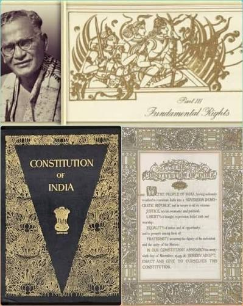

ABOUT THE INDIAN CONSTITUTION
The Constitution was drafted by the Constituent Assembly under the chairmanship of Dr. B. R. Ambedkar, who is widely regarded as the chief architect of the Indian Constitution. The drafting process took nearly 2 years, 11 months, and 18 days, involving detailed discussions, debates, and contributions from distinguished leaders and legal experts. After careful consideration, the Constitution was adopted on 26 November 1949 and officially came into effect on 26 January 1950, a day celebrated every year as Republic Day in India.
The Constitution of India is the supreme law of the country and serves as the foundation of the Indian legal and political system. It lays down the framework for the governance of the nation by defining the powers, responsibilities, and functions of the executive, legislature, and judiciary. It also establishes the relationship between the central government and the state governments while ensuring that the principles of democracy, justice, liberty, equality, and fraternity are upheld. The Constitution protects the rights and freedoms of every citizen and provides guidelines for maintaining peace, order, and good governance throughout the country.
The Indian Constitution is the longest written constitution in the world for any sovereign nation. It originally contained 395 Articles, 22 Parts, and 8 Schedules. Over time, several amendments have been made to address the changing needs of society and governance. Today, the Constitution includes many more Articles and Schedules, reflecting the country's growth and development. Despite these amendments, the core values and principles of the Constitution remain unchanged, ensuring stability, justice, and equality for all citizens
The Indian Constitution is the longest written constitution in the world for any sovereign nation. It originally contained 395 Articles, 22 Parts, and 8 Schedules. Over time, several amendments have been made to address the changing needs of society and governance. Today, the Constitution includes many more Articles and Schedules, reflecting the country's growth and development. Despite these amendments, the core values and principles of the Constitution remain unchanged, ensuring stability, justice, and equality for all citizens.
One of the greatest strengths of the Indian Constitution is its commitment to protecting the rights of every individual. It guarantees Fundamental Rights such as the Right to Equality, Right to Freedom, Right against Exploitation, Right to Freedom of Religion, Cultural and Educational Rights, and the Right to Constitutional Remedies. These rights ensure that every citizen is treated fairly and equally under the law, regardless of religion, caste, gender, language, or region. The Constitution also includes Fundamental Duties, which encourage citizens to respect the nation, protect public property, preserve the environment, promote harmony, and uphold the values of the Constitution.
Today, the Constitution continues to inspire millions of Indians by protecting their rights, promoting equality, and encouraging national unity. It serves as a symbol of justice, democracy, and the collective aspirations of the people of India. As the nation continues to progress, the Constitution remains a living document that adapts to changing times while preserving the fundamental ideals upon which the Republic of India was founded.
